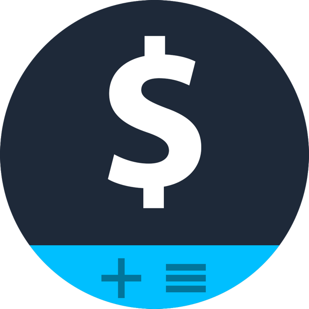

Sobre Mim
Meu nome é Vitor Mendes, tenho 21 anos e sou um estudante de
programação que pretende entrar no mercado. Tenho um pouco de
experiência com HTML5, CSS3, JavaScript, Bootstrap e pretendo
expandir meus conhecimentos em tecnologias Client-Side e
Server-Side.

O conversor
O conversor de moedas é uma aplicação feita para facilitar a
conversão do Real em outra moedas, como o Dólar, Euro, Libra e
Biticoin. Com isso podemos ter uma noção de como nossa moeda se
desvalorizou ou valorizou em comparação com as outras. É
importante ressaltar que essa aplicação trabalha com valores fixos
e futuramente terá seus valores recebidos de um servidor.
Cotação
A cotação do preço da moeda é definida pelo mercado conforme as
negociações de oferta e demanda feitas ao longo do dia. Contudo,
há vezes em que o Banco Central acaba interferindo no valor
estabelecido pelo mercado, comprando ou vendendo a moeda para
evitar uma valorização ou desvalorização acentuada.